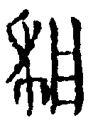
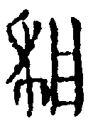

何晏論語序
正義曰：《經典釋文》、《唐石經》標題如此，必是何晏等原式。皇疏本作「論語集解敘」，邢疏本則每篇首行題「論語注疏解經卷第幾」，此序首行題「論語注疏解經序」，次行題「序解疏」三字。案：何晏等作序時，止有序，未有疏也。今竟稱「注疏序」，此自作疏時妄題，其後失檢，遂仍之也。
正義曰：「序」，皇疏本作「敍」。《爾雅•釋詁》：「敍，緒也。」孫炎注：「敍謂端緒也。」說文：「敍，次第也。」凡紀録一篇訖，述其大義並傳授源流，令人識而知之，故謂之「序」。《周易傳》有《序卦》，此稱「序」之始。序者，東西牆之名，蓋假借也。「漢」者，水名。高祖初爲漢王，王巴蜀、漢中，後因以爲有天下之號。「中壘校尉」者，《漢書•百官公卿表》：「中壘校尉掌北軍壘門內，外掌西域。」顏師古注：「掌北軍壘門之內，而又外掌西域。」案：「壘」者，軍所立營壘以爲固也。「校尉」，官名。若司隸、城門、屯騎、越騎、胡騎、射聲、虎賁、輕車，皆有校尉，秩皆二千石。劉向官終中壘校尉，故此舉爵稱之。邢疏云：「劉向者，高祖少弟楚元王之後，辟彊之孫，德之子，字子政，本名更生，成帝即位，更名向。數上疏言得失，以向爲中壘校尉。向爲人簡易，專精思於經術。成帝詔校經傳諸子詩賦，每一書已，向輒條其篇目，撮其指意，録而奏之。著別録、新序。此言『魯論語二十篇，皆孔子弟子記諸善言也』，蓋出於彼，故何晏引之。」案：此言出向別録，邢氏連言新序耳。「魯論語二十篇」者，言魯人所傳論語有此篇。《漢書•藝文志》：「漢興，有齊、魯之說。」明齊人、魯人所傳論語始於漢興時也。《釋名•釋典藝》：「論語，紀孔子與諸弟子所語之言也。論，倫也，有倫理也。語，敍也，敍己所欲說也。」 案：「論」、「倫」字皆從「侖」。說文龠部云：「侖，理也。」倫理之訓，實爲至當。故皇侃《序疏》首列其義。其下二途，則經綸今古，輪轉無窮，均爲傅會，通人所不取也。《藝文志》云：「論語者，孔子應答弟子時人及弟子相與言而接聞於夫子之語也。當時弟子各有所記，門人相與輯而論篹[zhuàn]，故謂之論語。」此謂夫子及弟子之語，門人論之。何異孫《十一經問對》：「論語有弟子記夫子之言者，有夫子答弟子問者，有弟子自相答問者，又有時人相言者，有臣對君問者，有師弟子對大夫之問者，皆所以討論文義，故謂之論語。」案：如何說，是夫子與弟於時人各有討論之語，非謂夫子弟子之語門人始論之也。此則視《漢志》爲得也。《藝文志》又云：「論語，魯二十篇，魯王駿說二十篇。」是二十篇爲魯論也。《漢書•武帝紀》：「著之于篇。」顏師古注：「篇謂竹簡也。」竹簡用以寫書，故說文訓「篇」爲書。實則書成，竹簡編連之，方名篇也。「皆孔子弟子記諸善言也」者，說文：「皆，俱詞也。」言孔子弟子不止一人也。《史記•孔子世家》云：「孔子生魯昌平鄉陬邑。其先宋人也，曰孔防叔。防叔生伯夏，伯夏生叔梁紇。紇禱於尼丘，得孔子。生而首上圩頂，故因名曰丘，字仲尼，姓孔氏。」此言孔子者，弟子稱其師曰「子」，尊者之名，不敢斥言也。弟子是對兄與父之稱，當時弟子事夫子比於父兄，故自稱弟子，若公西華言「弟子不能學」是也。弟子亦稱門人者，言爲夫子門內受業之人也。《釋名•釋典藝》：「記，紀也，紀識之也。」言恐有遺忘，故識於策也。「諸」者，不一之辭。《廣雅•釋言》：「善，佳也。」《漢書•匡衡傳》：「論語、孝經，聖人言行之要。」趙岐《孟子題辭》：「論語者，五經之錧轄，六藝之喉衿。」楊泉《物理論》：「論語者，聖人之至論，王者之大化。」是論語所言爲善言也。 《漢書•百官公卿表》：「太子太傅，古官，秩二千石。前後左右將軍，皆周末官，秦因之，位上卿。漢不常置，或有前後，或有左右，皆掌兵及四夷。相國、丞相，皆秦官，掌丞天子助理萬機，有左右。高帝即位，置一丞相，十一年更名相國。孝惠、高后置左右丞相，文帝二年復置一丞相。」是「太子太傅」、「前將軍」、「丞相」皆漢官名也。 邢疏引《漢書傳》云：「夏侯勝，字長公，東平人。少好學，爲學精熟，善說禮服，徵爲博士。宣帝立，太后省政，勝以《尚書》授太后，遷長信少府，坐議廟樂事下獄。繫再更冬，會赦，出爲諫大夫。上知勝素直，復爲長信少府，遷太子太傅。受詔撰《尚書》、《論語說》，賜黃金百斤。年九十卒官，賜塚塋，葬平陵。太后賜錢三百萬，爲勝素服五日，以報師傅之恩，儒者以爲榮。始，勝每講授，謂諸生曰：『士病不明經術。經術苟明，其取青紫如俛拾地芥耳。學經不明，不如親耕。』 蕭望之，字長倩，東海蘭陵人也。好學齊詩，事同縣后倉，又從夏侯勝問論語、禮服。以射策甲科爲郎，累遷諫大夫，後代丙吉爲御史大夫，左遷爲太子太傅。及宣帝寢疾，選大臣可屬者，引至禁中，拜望之爲前將軍。元帝即位，爲弘恭、石顯等所害，飲鴆自殺。天子聞之驚，拊手爲之卻食，涕泣，哀動左右。長子伋嗣爲關內侯。 韋賢，字長孺，魯國鄒人也。賢爲人質樸少欲，篤志於學，兼通禮、尚書，以詩教授，號稱鄒、魯大儒。徵爲博士，給事中，進授昭帝詩，稍遷光祿大夫。及宣帝即位，以先帝師，甚見尊重。本始三年，代蔡義爲丞相，封扶陽侯。年七十餘，爲相五歲，地節三年以老病乞骸骨，賜黃金百斤，罷歸，加賜第一區。丞相致仕自賢始。午八十二薨，諡曰節侯。少子玄成字少翁，復以明經歷位至丞相，鄒、魯諺曰：『遺子黃金滿籯，不如一經。』玄成爲相七年。建昭三年薨，諡曰共侯。此四人皆傳魯論。」 案：漢藝文志：「《魯夏侯說》二十一篇。」此當即夏候勝受詔所作說也。志載韋賢不及玄成，然韋賢傳言「玄成復以明經位至丞相」，且遺子一經，著於時諺，是玄成固傳其父之學。《張禹傳》言「韋玄成說論語」，故此序及陸德明《釋文敍録》並載之。東平、蘭陵、鄒皆屬魯，故《漢儒林•瑕丘江公傳》言「韋賢、夏侯勝皆魯人也。」又漢志魯論語家「傳十九篇」，當是傳魯論語者所作。翟氏灝《考異》謂「古人釋經，經與傳說俱各篇兩行，故經二十篇，而傳說之篇或十九，或二十一也」。至《漢志》復有「常山都尉龔奮，魯扶卿」。又「王駿說二十篇」，師古曰：「王吉子。」據《王吉傳》，吉子駿從梁丘臨學易，左曹陳咸薦駿賢父子，經明行修。是駿亦經生。然王吉本傳《齊論》，而駿傳《魯論》者，蓋父子異學。若孟卿爲禮、《春秋》，而使子孟喜從田王孫受《易》；劉向受《穀梁》，而劉歆獨好《左氏春秋》也。龔奮、魯扶卿、王駿不載此敍，皆所遺也。又敍録複有太子少傅夏侯建，亦序所遺。
齊論語二十二篇，其二十篇中章句，頗多於魯論。琅邪王卿及膠東庸生、昌邑中尉王吉，皆以教授。正義曰：齊論語者，齊人所傳，與魯不同，故多二篇。「章句」者，說文云：「章，樂竟爲一章，從音從十。十，數之終也。」本言樂竟，故文字每節已終則謂之章。說文云：「句，曲也。」《詩•關雎疏》云：「句者，局也，聯字分疆，所以局言者也。」《東觀漢紀》徐防上疏曰：「試論語本文章句，但通度，勿以射策。」趙岐《孟子敍》言：「論四百八十六章。」《漢石經》、《釋文敍録》每篇亦載章數，自是漢經師所傳有之。惟不言句數，或久失傳，或但有章，連言句耳。今惟《毛詩》有章句，舊題也。《漢書•張禹傳》：「始魯扶卿及夏侯勝、王陽、蕭望之、韋玄成皆說論語，篇第或異。」王陽是傳齊論，餘皆傳魯論。齊、魯篇第既有或異，則齊論章句，容亦增多。馮椅《論語解》以「子張問仁於孔子」，稱「孔子」，爲齊論。盧氏文弨《鐘山札記》以「陳成子弒簡公」，不稱「齊」，亦爲齊論。洪興祖《論語說》引或說，以季氏篇爲齊論，或當是也。竊又疑此文所云「章句」，專指訓釋之詞，若下言「周氏、包氏章句」者也。「章句」聯綴於本文，故言「二十篇中章句」也。漢志於魯論載「傳十九篇」，而於齊論載「說二十九篇」，則多魯論十篇。齊說即此序所言「章句」也，二十九篇之說爲齊論章句，則十九篇之傳亦爲魯論章句矣。魯傳、齊說不箸作者姓氏，明是諸儒相傳之義，非一人也。「琅邪」，郡名。「膠東」，國名。「昌邑」屬山陽郡，武帝天漢四年，更山陽爲昌邑國，並見《漢地理志》。邢疏云：「王卿，天漢元年，由濟南太守爲御史大夫。庸生名譚生，蓋古謂有德者也。」案：翟氏灝《考異》引《七略》曰：「論語家近有琅邪王卿，不審名，蓋卿非王氏名。」據《七略》，此文不言王卿居何官。又《漢志》及《釋文敍録》亦不詳庸生之名。邢疏云云，當別有所本。「中尉」者，《百官公卿表》云：「中尉，秦官，掌徼循京師。」又云：「諸侯王掌治其國，有中尉掌武職。成帝綏和元年，令中尉如郡都尉。」此昌邑中尉，即昌邑國所置之中尉也。《漢書•王吉傳》：「王吉，字子陽，琅邪皋虞人也。少好學明經，以郡吏舉孝廉爲郎，補若盧右丞，遷雲陽令。舉賢良爲昌邑中尉。」此三人皆傳齊論。其見於《王吉傳》，若「臣聞高宗諒闇，三年不言」，「天不言，四時行焉，百物生焉」，「舜、湯不用三公九卿之世，而舉皋陶、伊尹」，皆齊論也。王卿所教授，今無可考。 《王吉傳》：「初，吉兼通五經，能爲《騶氏春秋》，以詩、論語教授。」《張禹傳》：「禹先事王陽，後從庸生。」王陽即王吉，是庸生、王吉皆以齊論教授於人也。《漢志》云：「傳齊論者，昌邑中尉王吉、少府宋畸、御史大夫貢禹、尚書令五鹿充宗、膠東庸生，惟王陽名家。」《釋文敍録》同。此序不及宋畸、貢禹、五鹿充宗，亦所遺也。
故有魯論，有齊論。正義曰：論語亦單稱「論」，故有魯論、齊論及古論之名。董仲舒《春秋繁露》、趙岐《孟子章句》凡引論語，多直稱論。史游《急就章》「宦學諷誦孝經、論」，《張禹傳》「欲爲論，念張文」是也。亦有單稱「語」者，《後漢書•邳彤傳》引「語曰：『一言可以興邦。』」《橋玄傳》引「語曰：『三軍可奪帥，匹夫不可奪志。』」《崔駰傳》引「語曰：『不患無位，患所以立。』」是也。又有稱「經」者，《漢書•于定國傳》引「經曰：『萬方有罪，罪在朕躬。』」是也。又有稱「傳」者，《漢書•魯共王傳》：「得古文經、傳。」「傳」謂論語，其它見於史者甚多，《揚雄傳贊》所謂「傳莫大於論語」是也。又有稱「記」者，《後漢書•趙咨傳》引「記曰：『喪，與其易也寧戚。』」是也。又有稱「說」者，《前漢書•郊祀志》引「論語說曰：『子不語怪神』」是也。
魯共王時，嘗欲以孔子宅爲宮，壞，得古文論語。
正義曰：邢疏云：「傳曰：『魯共王餘，景帝子，程姬所生。以孝景前二年立爲淮陽王，前三年徙王魯，二十八年薨。諡曰共王。初好治宮室，壞孔子舊宅以廣其宮，聞鐘磬琴瑟之音，遂不敢復壞，於其壁中得古文經傳。」即謂此論語及孝經爲傳也。
酈道元《水經•泗水注》言：「曲阜武子臺南四里許，則孔廟，即夫子之故宅也。宅大一頃，所居之堂，後世以爲廟。」又云：「孔廟東南五百步，有雙石闕，即靈光之南闕。北百余步，即靈光殿基，是魯共王之所造也。」據此文，夫子宅東南三、四百步外，即近靈光，則共王所居之宮，與夫子宅相毗連可知。故欲壞孔子宅以廣其宮也。其孔子壁中有經傳者，《孔叢子•獨治篇》：「陳餘謂子魚曰：『秦將滅先王之籍，而子書籍之主，其危矣乎？』子魚曰：『顧有可懼者，必或求天下之書焚之，書不出則有禍，吾將先藏之以待其求，求至無患矣。』」孔叢雖僞書，然此言當得其真。顏師古注《漢書•藝文志》引「《漢紀•尹敏傳》云：『孔鮒所藏』」鮒即子魚也。若《家語》以爲孔騰所藏，今文書序以爲孔惠所藏，則異說矣。
《論衡•佚文篇》：「恭王壞孔子宅以爲宮，聞弦歌之聲，懼，復封塗，上言武帝。武帝遣吏發取古經論語。」然則恭王始壞孔宅而復封塗，未竟壞也。武帝乃更毀壁發取古文，則古文非共王所得，此序以壞宅得論語屬之共王者，本以共王始事故也。《漢•藝文志》言：「武帝末，魯共王壞孔子宅。」
案：恭王初封淮陽，後封魯，在位二十八年薨，當元朔元年，其壞孔子宅事又在其前，則爲武帝初年，《漢志》以爲武帝末，未審也。《志》又云：「得古文尚書及禮記、論語、孝經凡數十篇，皆古字也。」《魏書•江式傳》：「亡新居攝；使大司空甄豐校文字之部，時有六書：一曰古文，孔子壁中書也。魯共王壞孔子宅而得《禮》、《尚書》、《春秋》、論語、孝經也。」
許慎《說文自敍》云：「倉頡之初作書，蓋依類象形，故謂之文。其後形聲相益，即謂之字。及周宣王太史籀著大篆十五篇，與古文或異。至孔子書六經，左丘明述《春秋傳》，皆以古文。」是古文爲倉頡所作。言古者，依後世今文別之也。《晉書•衛恒傳》：「漢武時，魯恭王壞孔子宅，得《尚書》、《春秋》、論語、孝經。時人以不復知有古文，謂之科斗書。漢世秘藏，希得見之。」
段氏玉裁《說文序注》云：「古文出於壁中，故謂之壁中書，晉人謂之科斗文。王隱曰：『科斗文者，周時古文也。其字頭麤尾細，似科斗之蟲，故俗名之焉。』」又《說文自敍》稱論語亦爲古文，此古文據段說兼有大篆。今其著者惟荷 字爲古文，其餘所引，則段氏謂「所說字形、字音、字義，皆合倉頡、史籀」，非謂皆用壁中古文也。
翟氏灝《四書考異》云：「按魏正始中立三字石經，嘗倣效孔壁古文，備爲一書。又晉咸甯時汲郡人發古冢，得竹冊十余萬言，其間具有論語。」又云：「魏所立石，《隋志》僅録其《尚書》、《春秋》，未定論語之曾刊否也。汲冢所出羣書，隨複散棄，存於後者，惟周書、魏史、穆天子傳、瑣語數種，其論語自六朝皆絕口不稱，恐已旋滅之矣。」據此，則論語古文久已無傳，而郭忠恕《汗簡》録古論語字，如郁作，糾作，甯作，昆作 ，備作，奪作，羿作，訒作，舉作，虐作，勃作，葸作，貉作，又作，綽作，篤作，廄作。朱雲《金石韻府續録》古論語如弟作
，備作，奪作，羿作，訒作，舉作，虐作，勃作，葸作，貉作，又作，綽作，篤作，廄作。朱雲《金石韻府續録》古論語如弟作 ，鼗作，𡡾作，柙作
，鼗作，𡡾作，柙作 ，褻作。凡所載古文，疑皆後人依放鐘鼎及說文爲之，未必及見孔壁古文也。
，褻作。凡所載古文，疑皆後人依放鐘鼎及說文爲之，未必及見孔壁古文也。
正義曰：《漢•藝文志》：「齊二十二篇。多問王、知道。」如淳曰：「問王、知道，皆篇名也。」晁公《武郡齋讀書志》：「詳其名，當是內聖之道，外王之業。」朱氏彝尊《經義考》斥晁說爲附會，謂「今《逸論語》見於《說文》。《初學記》、《文選注》、《太平御覽》等書，其詮『玉』之屬特詳。竊疑齊論所逸二篇，其一乃問玉，非問王也。考之篆文，三畫正均者爲『王』，中畫近上者爲『玉』，初無大異，因譌『玉』爲『王』耳。王伯厚亦雲：『問王疑即問玉。』亶其然乎？」案：說文引《逸論語》：「玉粲之璱兮，其𤩰[lì]猛也。如玉之瑩。」段氏玉裁注云：「張禹魯論所無，則謂之逸論語，如十七篇之外爲逸禮，二十九篇之外爲逸尚書也。」其《初學記》所引「璠璵」，魯之寶玉也。孔子曰：「美哉璠璵，遠而望之，煥若也；近而視之，瑟若也。一則理勝，一則孚勝。」又初學記及御覽所引：「玉十謂之區，治玉謂之琢，又謂之雕。瑳，玉色鮮白也。瑩，玉色也。瑛，玉光也。瓊，赤玉也。璿瑾瑜，美玉也。璑，三采玉也。玲、瓏、瑲、瑣、瑝，玉聲也。璬，玉佩也。瑱，充耳也。璪，玉飾以水藻也。」凡所詮「玉」之辭，與說文所引逸論語文全不類。朱氏不當並數之，今家語亦有問《玉篇》，當是依用論語篇名。然則問王之爲問玉，其說信不誣也。 宋氏翔鳳《師法表》以問王爲春秋素王之事，備其問答。又合知道爲發揮堯曰篇之義蘊。此曲說，不可從。《漢石經•論語碑》末記諸家有無不同之說，有「蓋肆乎其肆也」句，不知何篇之文，則亦逸文之僅存也。漢志云：「論語古二十一篇，出孔子壁中，有兩子張。」蓋古論分堯曰，下章「子張問從政」別爲一篇，而題以子張問，與第十九篇之子張篇題略同，故有兩子張。如氏注以爲「篇名從政」，殆未然也。 《論衡•正說篇》：「漢興失亡，至武帝發取孔子壁中古文，得二十一篇，共齊、魯、河間九篇，本三十篇。至昭帝女讀二十一篇，宣帝下太常博士。時尚稱書難曉，後更隸寫傳誦。」又云：「今時稱論語二十篇，又失齊、魯、河間九篇。本三十篇，分佈亡失，或二十一篇，目或多或少，文讚或是或誤。」案：齊、魯、河間九篇，不知何篇。翟氏灝考異以藝文志論語十二家，有燕傳說三篇，河間趙地，偪近於燕，燕傳疑即《論衡》所云河間者也。案：翟說亦是存疑，不足爲據。魯論、齊論已見前志，不得別有齊、魯合河間爲九篇，出於漢志之外，又合古論爲三十篇也。 《史記•孔子世家》：「時魯共王壞孔子舊宅，壁中得古文虞、夏、商、周之書，及傳論語、孝經，悉還孔氏。」《漢•藝文志》亦言：「武帝末，魯共王壞孔子宅，得古文尚書及禮記、論語、孝經，凡數十篇。孔安國者，孔子後也，悉得其書。」則古文論語久入孔氏，昭帝女何由得讀？既帝女能讀，而宣帝時博士轉難曉耶？此皆無稽之說，不足與深辨也。 皇侃義疏敍曰：「古論篇次，以鄉黨爲第二篇，雍也爲第三篇，內倒錯，不可具說。」是古論篇次不與齊、魯論同。然皇本多爲異域人所改，此等說他處未見，恐難據也。《隋書•經籍志》：「古論語章句煩省，與魯論不異。」然學而篇「未若貧而樂」，古論「樂」下有「道」字。鄉黨篇「車中內顧」，古論作「不內顧」。衛靈公篇「子曰：『父在觀其志，父沒觀其行。』」鄭云「古皆無此章」。堯曰篇「知命」章，鄭云「魯論無此章」，則謂古、齊有此章也。古、齊、魯章句本有不同，而隋志謂其煩省不異，亦大略言之爾。《經典敍録》引桓譚《新論》說古論云：「文異者四百餘字。」今略見史記、說文並鄭注中。
安昌侯張禹本受魯論，兼講齊說，善者從之，號曰張侯論，爲世所貴。正義曰：「安昌」，據漢地理志屬汝南郡。《漢書傳》云：「張禹字子文，河內軹人也。從沛郡施讐受《易》，琅邪王陽、膠東庸莊問論語，既皆明習，有徒眾，舉爲郡文學。甘露中，諸儒薦禹，有詔太子太傅蕭望之問。禹對易及論語大義，望之善焉，奏禹經學精習，有師法，可試事。奏寑，罷歸故官。久之，試爲博士。 初元中，立皇太子，而博士鄭寬中以尚書授太子，薦言禹善論語。詔令禹授太子論語，由是遷光祿大夫。數歲，出爲東平內史。成帝即位，徵禹、寬中，皆以師賜爵關內侯，給事中，領尚書事。河平四年，代王商爲丞相，封安昌侯。爲相六歲，鴻嘉元年以老病乞骸骨，就第。建平二年薨，諡曰節候。始魯扶卿及夏侯勝、王陽、蕭望之、韋玄成皆說論語，篇第或異。禹先事王陽，後從庸生，采獲所安，最後出而尊貴。諸儒爲之語曰：『欲爲論，念張文。』由是學者多從張氏，餘家寖微。」 《釋文敍録》云：「安昌侯張禹受魯論於夏侯建，又從庸生、王吉受齊論，擇善而從，號曰張侯論。」據《敍録》，是禹受魯論於夏侯建，而禹傳不及建，蓋所遺也。宋氏翔鳳《師法表》：「張論合齊、魯兩家之學，特其篇章與魯論同，故多以張論爲魯論。後漢熹平石經即用張論。」案：《藝文志》：「魯安昌侯說二十一篇。」師古曰：「張禹也。」考禹傳云「初，禹爲師，以上難數對已問經，爲論語章句獻之」意，此即二十一篇說也。《隋書•經籍志》：「張氏晚講齊論，後遂合而考之，刪其繁惑，除去問王、知道二篇，從魯論二十篇爲定。」是張論本二十篇。而《漢志》言禹有二十一篇，說者疑「一」字誤衍，或是經二十篇，說一篇。志連經言之，得有二十一篇也。又《禹傳》云：「禹成就弟子尤著書，淮陽彭宣至大司空，沛郡戴崇至少府九卿。」當亦傳論語之學者，此序未之及也。
包氏、周氏章句出焉。正義曰：《後漢•儒林傳》：「包咸字子良，會稽曲阿人也。少爲諸生，受業長安，師事博士右師細君，習魯詩、論語。王莽末，去歸鄉里。光武即位，舉孝廉，除郎中。建武中，入授皇太子論語，又爲其章句。拜諫議大夫。永平五年，遷大鴻臚。經傳有疑，輒遣小黃門就舍即問。年七十二卒於官。子福拜郎中，亦以論語入授和帝。」 邢疏云：「周氏，不詳何人。不言名而言氏者，蓋爲章句之時，義在謙退，不欲顯題其名，但欲傳之私族，故直云氏而已。或曰以何氏諱咸，故沒其名，但言包氏，連言周氏耳。」《釋文敍録》云：「後漢包咸、周氏並爲章句，立於學官。」 宋氏翔鳳《師法表》云：「謂立石大學，非張論曾立博士也。」案：宋說似誤。趙岐《孟子題辭》：「孝文欲廣遊學之路，論語、孝經、孟子、爾雅，皆置博士。」劉歆移讓太常書：「孝文時，尚書初出屋壁，詩始萌芽。天下眾書往往頗出，皆諸子傳說，猶立於學官，爲置博土。」時所稱傳，即論語、孟子類也。《唐書•薛放傳》：「漢時論語首立於學官。」則論語西漢時已立。至《後漢•百官志》太常博士凡十四人，不及論語，然《後漢•徐防傳》云：「防疏謂『博士及甲乙試策，宜從其家章句，開五十難以試之，五經各取上第六人，論語不宜射策。雖所失或久，差可矯革。』詔書下公卿，皆從防言。」 翟氏灝《考異》云：「據通典載漢小郡都尉博士督郵板狀曰：『通易、尚書、詩、禮、春秋、孝經、論語，兼綜載籍，窮微闡奧。』都尉博士猶講授論語，太常博士詎轉不講授與？此正可與徐防事互爲發明。蓋其時諸經皆兼論語，故不復設專官耳。」案：翟氏甚是。 論語惟立博士，故得立石大學。洪适《隸釋》載殘字石經堯曰篇，末云「而在於蕭牆之內，盍、毛、包、周無於此」，以諸家校魯論之異同。宋氏翔鳳《師法表》云：「盍氏、毛氏，不知與包、周孰爲先後，又不知爲齊爲魯。」
古論唯博士孔安國爲之訓解，而世不傳。至順帝時，南郡太守馬融亦爲之訓說。正義曰：「古論」者，古字論語也。《史記•孔子世家》：「安國，孔子十一世孫，爲武帝博士。」《漢書•孔光傳》言：「安國爲武帝博士，至臨淮太守。」《世家》但言「博士」者，當是史公就目見時言之。此序本《世家》，故亦祇言「博士」，未詳其後所居之官耳。《世家》又云：「時魯共王壞孔子舊宅，壁中得古文虞、夏、商、周之書，及傳論語、孝經，悉還孔氏。」《漢書•藝文志》云：「魯共王壞孔子宅，而得古文尚書及禮記、論語、孝經凡數十篇，皆古字也。孔安國者，孔子後也，悉得其書。」是古文論語爲安國所得也。 然《漢志》不言安國注論語，而此序謂安國爲古論訓解者，王肅《家語後序》云：「魯恭王得壁中書，以歸夫子十一世孫子國。子國乃考論古今文字，撰眾師之義，爲《古文論語訓》二十一篇，《尚書傳》五十八卷。其後孝成帝詔劉向校定眾書，都記録，名《古文尚書》、《論語別録》。子國孫衍爲博士，上書辨之，略曰：『古文尚書、論語，世人莫有能言者，臣祖安國爲之今文讀而訓傳。其義既畢，會值巫蠱事起，遂各廢，不行於時，然其典雅正實，與世所傳者不同日而語也。光祿大夫向以爲其時所未施行之故，《尚書》則不記於別録，論語則不使名家也。臣竊惜之，臣愚以爲宜皆記録別見。』奏上。天子許之，未即論定，而遇帝崩，向又病亡，遂不果立。」案：《漢•藝文志》列論語十二家，於齊、魯論傳、說皆備載之。而於古論不言有孔氏說，劉向雅博，爲世通儒，倘及見典雅正實之安國古文訓，豈有廢置之不使名家乎？安國以今文讀古文，而司馬遷正從安國問故，其《孔子世家》、《弟子列傳》所載論語文，必是安國之學。今校之孔注，如在陳絕糧，敍孔子去衛如曹，又之宋之陳，佛肸爲趙簡子邑宰，顯與史記不合。其它差謬，遠失經旨者甚多，是此注必非安國所作。今所傳《尚書傳》、《孝經傳》，往時儒者皆知其僞，而論語因爲集解所采，無敢異議。近陳氏鱣箸《論語古訓》，自序疑其不類。沈氏濤箸《論語孔注辨僞》，自序譏其詮義膚淺，徵典舛誤，疑爲平叔所作。丁氏晏箸《論語孔注證僞》，以爲王肅所作。蓋王肅好與鄭難，故論者以《尚書傳》爲肅作，則此論語注必亦出肅之手，而特於家語序互證成之。丁氏此說，較沈氏爲得。《論衡•正說篇》謂「安國以授魯人扶卿，官至荊州刺史，始曰論語」。案：扶卿爲魯論之學，見《漢•藝文志》，不傳古論；且漢志及張禹傳、經典敍録皆言魯扶卿，是魯爲其姓。論衡獨言魯人扶卿，與漢志諸文不同。又荊州刺史似謂扶卿所居之官，論衡此言，未知所本。至論語之名，早見坊記，豈至安國及扶卿時始有其名？王充於經術頗疎，此等說終是不可據也。邢疏云：「案後漢紀：『孝順皇帝諱保，安帝之子也。』地理志云：『南郡，秦置，高帝元年更爲臨江郡，五年復故。景帝二年復爲臨江郡，中二年復故，屬荊州。』表云：『郡守，秦官，掌治其郡，秩二千石。景帝中二年，更名太守。』後漢書傳云：『馬融字季長；扶風茂陵人也，有俊才。初，京兆摯恂以儒術教授，隱於南山，融從其遊學；博通經籍。永初四年，拜爲校書郎中，詣東觀典校秘書。陽嘉二年，拜議郎。大將軍梁商表爲從事中郎，轉武都太守。三遷，桓帝時爲南郡太守。融才高博洽，爲世通儒，注孝經、論語、詩、易、三禮、尚書。年八十八，延熹九年卒於家。』」據融傳，但言「注論語」，而此序以爲古論者，以融注他經多爲古文，故意所注論語亦是古論。其後康成取古論校正魯論，當亦受之融者也。皇侃疏、隋經籍志謂馬融亦注魯論，似未然。
漢末，大司農鄭玄就魯論篇章，考之齊、古，爲之注。正義曰：康成生當靈、獻時，故曰「漢末」。「大司農」者，《漢書•百官公卿表》云：「治粟內史，秦官，掌穀貨，有兩丞。景帝後元年更名大農令，武帝太初元年更名大司農。」司馬彪百官志：「大司農卿一人，中二千石。」 後漢書傳云：「鄭玄字康成，北海高密人也。受業，師事京兆第五元先，始通京氏易、《公羊春秋》、三統曆、九章算術。又從東郡張恭祖受《周官》、《禮記》、《左氏春秋》、《韓詩》、《古文尚書》。以山東無足問者，乃西入關，因涿郡盧植，事扶風馬融。融素驕貴，玄在門下，三年不得見，乃使高業弟子傳受於玄。玄曰夜尋誦，未嘗怠倦。會融集諸生考論圖緯，聞玄善算，乃召見於樓上，玄因從質諸疑義，問畢辭歸。融喟然謂門人曰：『鄭生今去，吾道東矣。』玄自遊學，十餘年乃歸鄉里。家貧，客耕東萊，學徒相隨已數百千人。及黨事起，乃與同郡孫嵩等四十餘人俱被禁錮，遂隱修經業，杜門不出。建安元年，自徐州還高密。玄後嘗疾篤，自慮，以書戒子益恩云云。時大將軍袁紹總兵冀州，遣使邀玄，舉玄茂才，表爲左中郎將，皆不就。公車徵爲大司農，給安車一乘，所過長吏送迎。乃以病自乞還家。卒年七十四。自郡守以下嘗受業者，縗絰赴會千餘人。凡玄所注周易、尚書、毛詩、儀禮、禮記、論語、孝經、尚書大傳、中候、乾象曆，又箸天文七政篇、魯禮禘祫義、六藝論、毛詩譜、駁許慎五經異議、答臨孝存周禮難，幾百余萬言。玄質於詞訓，通人頗譏其繁。至於經傳洽孰，稱爲純儒，齊、魯間宗之。」「就魯論篇章」云云者，隋書經籍志：「鄭以張侯論爲本，參校齊、古而爲注。」張論即魯論。陸氏音義云：「鄭校周之本，以齊、古讀正，凡五十事。」宋氏翔鳳《師法表》云：「周之本，即周氏之出於張侯者，蓋張論出而三家遂微，鄭學興而齊、古差見，是康成雖就魯侯、實兼通齊、古，而於古論尤多徵信。故注中從古讀正魯論者不一而足。其從齊讀已不可考，然尋兩家之學；可以得其一二。」案：音義謂「鄭以齊、古校正周本，凡五十事」，今以鄭氏佚注校之，祇得二十四事，皆明箸魯讀之文。其「哀公問主」解爲「社主」，雖從周本作「主」，仍是從古論義爲「社主」也。至如「有酒食，先生饌」，「饌」，鄭作「餕」。「無適也」，「適」，鄭作「敵」。「異乎三子者之撰」，「撰」，鄭作「僎」，云「僎讀曰詮」。「子貢方人」、「方」鄭作「謗」。「朱張」，鄭作「侏張」。「廢中權」，「廢」鄭作「發」。皆與集解本異，疑此即據齊論校正者也。又衛靈公篇：「子曰：『父在，觀其志；父沒，觀其行。』」鄭云：「古皆無此章。」謂古論及齊論無此章。鄭仍從周本有此章也。又堯曰篇知命章，鄭云：「魯論無此章。」此又從齊、古校補周本者也。宋氏謂「鄭從齊讀已不可考」，是大略言之，未細檢耳。宋氏《師法表》又云：「隋經籍志：『論語注十卷，鄭玄注。』經典敍録同。隋志又言：『梁有古文論語，鄭玄注，亡。』蓋阮孝緒所箸録，鄭無別注古文，其所注論，即用古文，故別題古文論語。」案：舊唐書經籍志：「論語十卷，鄭玄注。論語釋義十卷，鄭玄注。」新唐書藝文志：「論語鄭玄注十卷，又注論語釋義一卷。」分注與釋義爲二，疑釋義即鄭君論語敍。故新志作「一卷」，其舊志云「十卷」者，字之誤也。又二志有鄭君「論語篇目弟子一卷」，今略見史記集解中。宋氏翔鳳《師法表》云：「隋志言『梁、陳之時，惟鄭玄、何晏立於國學，而鄭氏甚微。周、齊、鄭學獨立。至隋，何、鄭並行，鄭氏盛於人間。』考箸録家說論語者；康成以前，俱已久佚，至鄭氏，大抵佚於五季之亂，略存於何解、陸音。」
近故司空陳羣、太常王肅、博士周生烈，皆爲義說。正義曰：邢疏云：「年世未遠，人己歿故，是近故也。」晉書職官志：「太尉、司徒、司空，並古官也。自漢歷魏，置以爲三公。」漢書百官公卿表：「奉常，秦官，掌宗廟禮儀。景帝中六年，更名太常。」司馬彪百官志：「太常卿一人，中二千石。」本注曰：「掌禮儀祭祀。」百官公卿表：「博士，秦官，掌通古今。」是司空、太尉、博士皆官名也。魏志陳羣傳：「陳羣字長文，潁川許昌人也。太祖辟羣爲司空西曹掾屬。文帝即位，遷尚書僕射。明帝即位，進封穎陰侯，頃之爲司空。青龍四年薨，諡曰靖侯。」 王朗傳：「王朗，東海蘭陵人。子肅，字子雍，年十八，從宋忠讀太玄，而更爲之解。黃初中，爲散騎黃門侍郎。太和三年，拜散騎常侍。正始元年，出爲廣平太守。公事徵還，拜議郎。頃之，爲侍中，遷太常。時大將軍曹爽專權，任用何晏、鄧颺等。肅曰：『此輩即弘恭、石顯之屬。』後爲光祿勳，徙爲河南尹，後遷中領軍，加散騎常侍。甘露元年薨。初，肅好賈、馬之學，而不好鄭氏，采會同異，爲尚書、詩、論語、三禮、左氏解，皆列於學官。」經典敍録有王肅論語注十卷。 後漢馮衍傳「尚書周生豐」，李賢注：「風俗通曰：『周生，姓也。』」王朗傳：「自魏初徵士敦煌周生烈，明帝時董遇等，亦歷注經傳，頗傳於世。」裴松之注：「臣按此人姓周生，名烈。何晏論語集解有烈義例，餘所箸述，見晉武帝中經簿。」經典敍録「周生烈」注引「七録：字文逢。」邢疏引七録云：「字文逸，本姓唐，魏博士侍中。」案：「逢」、「逸」二字形相近，未知孰是。隋志：「周生子要論一卷，魏侍中周生烈撰。」新唐志：「儒家有周生烈子五卷。」是周生後官侍中，其說論語，即裴氏所云「義例」也。今邢疏、集解但有周氏，無周生氏，至皇疏又但有周生烈，而無周氏。蓋二家之注，久爲後人混併，莫可識別矣。惟「冉有退朝」注云：「君之朝。」見於釋文所引，此則確爲周生義也。
前世傳受師說，雖有異同，不爲訓解，中間爲之訓解，至于今多矣。所見不同，互有得失。正義曰：邢疏云：「據今而道往古，謂之前世，上教下曰傳，下承上曰受。中間爲之訓解，謂自古至今，中間包氏、周氏等爲此論語訓解，有二十餘家，故曰『至于今多矣』。以其趣舍各異，故得失互有也。」案：「前世」當指前漢，藝文志載有魯、齊之說，即僞孔此注，亦見采録，則非不爲訓解矣。序之此言，舉其大略，未爲篤論也。 後漢儒林傳言何休「注訓論語」，不爲集解所采，是當時已佚不傳矣。北堂書鈔六十六引論語：「女爲君子儒，無爲小人儒。」何休注云：「君子爲儒，將以明道；小人爲儒，則矜其名。」劉氏逢祿據書鈔所引，爲何休佚注，推演其義，爲論語述何篇一卷。然集解載此注爲孔安國注，史記弟子傳集解引作「何曰」，「何」者，何晏，非何休也。足利本不載姓名，則亦以爲「何曰」矣。且小人儒不必是矜名，其義淺狹，決非劭公語可知。
今集諸家之善，記其姓名，有不安者，頗爲改易，名曰論語集解。正義曰：爾雅釋言：「集，會也。」通作「輯」，若劉歆有輯略也。邢疏云：「注但記其姓，而此連言名者，以箸其姓，所以名其人，非謂『名字』之名也。頗爲改易者，注首不言『包曰』、『馬曰』，及諸家說下『一曰』者，皆是何氏自下己意，改易先儒者也。」案：此語亦見晉書鄭沖傳。惟「記其姓名」下有「因從其義」四字。集解姓名並舉，以皇疏本證之自見。邢氏亦本皇疏，而此疏云云，或所見別本實不稱名也。 「集解」者，集諸家解論語之義。杜預注《春秋左傳》，合經傳諸文，比其義類，亦名「集解」，與此言同旨異。經典敍録、隋志、唐志俱云：「何晏集解十卷。」
光祿大夫關內侯臣孫邕、光祿大夫臣鄭沖、散騎常侍中領軍安鄉亭侯臣曹羲、侍中臣荀顗、尚書駙馬都尉關內侯臣何晏等上。正義曰：漢百官公卿表：「大夫掌論議，有太中大夫、中大夫、諫大夫，皆無員，多至數十人。太初元年，更名中大夫爲光祿大夫，秩比二千石，無印綬。」晉書職官志：「光祿大夫加金章紫綬者，品秩第二，祿賜、班位、冠幘、車服、佩玉，置吏卒羽林。其以爲加官者，惟假章綬、祿賜、班位而已，不別給車服、吏卒也。光祿大夫假銀章青綬者，品秩第三，位在金紫將軍下，諸卿上。漢時所置無定員，多以爲拜假賵贈之使，及監護喪事。魏氏已來，轉復優重，不復以爲使命之官。其諸公告老者，皆家拜此位，及在朝顯職，復用加之。」 又云：「光祿大夫與卿同秩中二千石。」據晉志，則魏時貴重之臣方拜此職，而孫邕以關內侯得爲光祿大夫者，大約如諸公告老家拜此位也。司馬彪百官志：「關內侯，承秦賜爵十九等爲關內侯，無土，寄食在所縣，民租多少各有戶數爲限。」劉昭注：「關內侯者，依古畿內子男之義也。秦都山西，以關內爲王畿，故曰關內侯也。」 邢疏云：「孫邕字宗儒，樂安青州人也。」案：魏志齊王紀注引魏書廢齊王表有「光祿大夫關內侯邕」，即孫邕也。晉任城太守夫人孫氏碑云：「夫人，濟南孫氏之中女也。父列卿光祿大夫建德亭侯。」又歷述其父於魏文帝時爲侍郎，又爲勃海太守十餘年，其後爲吏部尚書，又爲侍中。武氏億跋尾據盧毓傳，孫邕代毓爲吏部尚書，與碑言「吏部尚書」合。而關內侯特名號侯之一，至其後，乃獲實封，有建德亭侯爵矣。桂氏馥跋尾據管寧傳，侍中孫邕薦寧，與碑言「侍中」合。魏文帝典論：「光和中北海王和平，亦好道術，自以當仙，濟南孫邕少事之。」則邕爲濟南人。邢疏云「樂安」者，樂安與濟南同隸青州，地最相近，故兩地並稱。案：王和平事，亦見後漢方術傳。典論言王和平爲光和時人，而邕少事之，則邕亦爲靈帝或獻帝時人。計終魏世，必已歿矣。 晉書鄭沖傳：「鄭沖字文和，滎陽開封人也。起自寒微，卓爾立操，清恬寡欲，耽玩經史，遂博究儒術及百家之言。及魏文帝爲太子，命沖爲文學，累遷尚書郎，出補陳留太守。大將軍曹爽引爲從事中郎，轉散騎常侍、光祿勳。嘉平三年，拜司空。及高貴鄉公講尚書，沖執經親授，與侍中鄭小同俱被賞賜。俄轉司徒。常道鄉公即位，拜太保，封壽光侯。時文帝輔政，平蜀之後，命賈充、羊祜等分定禮儀、律令，皆先諮於沖，然後施行。」按：曹爽輔政，在正始之際，沖由從事中郎轉至光祿勳，在曹爽輔政時。惟傳言爲「光祿勳」，與此敍「光祿大夫」不同，疑光祿勳是其實官，光祿大夫則加官也。作此序時，未爲光祿勳，故但言光祿大夫；及陳壽作傳，詳其實官，亦不及加官矣。 晉職官志：「散騎常侍，本秦官也。秦置散騎，又置中常侍，散騎騎從乘輿車後，中常侍得入禁中，皆無員，亦以爲加官。漢東京初，省散騎，而中常侍用宦者。魏文帝黃初初，置散騎，合之于中，同掌規諫，不典事。」 「合之于中」者，晉灼漢表注云：「魏文帝合散騎、中常侍爲散騎常侍也。」晉志又云：「中領軍將軍，魏官也。漢建安四年，魏武丞相府自置，及拔漢中，以曹休爲中領軍。文帝踐阼，始置領軍將軍，以曹休爲之，主五校、中壘、武衛等三營。」據志此文，則「中領軍」即中領軍將軍也。不言「將軍」者，辭之省。 曹爽傳：爽弟羲為中領軍。」與武衛將軍訓、散騎常侍彥並列，且稱其「貴寵莫盛」。其後司馬懿奏誅曹爽，亦言其「破壞諸營，盡據禁兵，羣宫要職，皆置所親。殿中宿衞，歷世舊人皆復斥出」。即指借曹羲等言。齊王紀：「正始三年，秋七月乙酉，以領軍將軍蔣濟為太尉。」則曹羲之官中領軍必在三年秋後矣。「安鄉亭侯」者，安鄉不知所在。說文：「亭，民所安定也。亭有樓，從高省，丁聲。」漢書百官公卿表云：「大率十里一亭，十亭一鄉，皆秦制也。」此安鄉亭即是十亭之鄉，故舉鄉名以表之。司馬彪百官志：「列侯，所食縣為侯國。」本注曰：「承秦爵二十等，為徹侯，金印紫綬，以賞有功。功大者食縣，小者食鄉亭，得臣其所食吏民。」然則安鄉亭侯，即列侯食於安鄉者也。邢疏云：「曹羲，沛國譙人。魏宗室曹爽之弟。」晉志又云：「秦置侍中，漢因之，俱無定員。魏晉以來置四人，掌儐贊成儀。」漢注表引應劭曰：「入侍天子，故曰侍中。」荀顗：「字景倩，穎川人，魏太尉彧之第六子也。博學洽聞，理思周密。魏時以父勳除中郎，擢拜散骑侍郎，累遷侍中。爲魏少帝執經，拜骑都尉，賜爵關内侯。難鍾會易無互體，又與扶風王駿論仁孝孰先，見稱於世。」案：顗爲魏少帝執經，指高貴鄉公，見三國志注。其爲侍中在其前，則當齊王時，故廢齊王表亦有「侍中臣顗，即荀顗也。晉志又曰：「列曹尚書，本漢承秦置。至成帝，又置尚書五人，一人爲僕射，而四人分爲四曹，通掌圖書秘記章奏之事，各有其任。其一曰掌侍曹，主丞相御史公卿事。其二曰二千石曹，主刺史郡國事。其三曰民曹，主吏民上書事。其四曰主客曹，主外國夷狄事。後成帝又置三公曹，主斷獄，是爲五曹。後漢光武改常侍曹爲吏部曹，主選舉祠祀事。」又云：六曹並令僕二人，謂之八座。尚書雖有曹名，不以爲號。靈帝以侍中梁鵠爲選部尚書，於此始見曹名。及魏改選部爲吏部，主選部事。凡五曹尚書、二僕射、一令爲八座。」此何晏所官尚書，即是吏部。魏志傅嘏傳：「時曹爽秉政，何晏爲吏部尚書。」經典敘録亦言「吏部尚書何晏」又文選景福殿賦注引典略云：「平叔遷尚書，主選。」裴松之曹爽傳注：「宴爲尚書，主選舉，其宿與之有舊者，多被拔擢。言晏主選舉，則爲吏部無疑。此序但言「尚書」者，當時不列曹名。齊王紀正始八年，有「尚書何晏奏」，亦是祇言「尚書」也。漢表云：「奉車都尉，駙馬都尉，皆武帝初置，秩比二千石。」師古曰：「駙，副馬也。非正駕車，皆爲駙馬。」司馬彪志本注曰：「無員，掌駙馬。」魏制無考。曹真傳：「晏，何進孫也。母尹氏，爲太祖夫人。晏長於宫省，又尚公主，少以才秀知名，好老、莊言，作道德論及諸文賦箸述凡數十篇。」裴松之注：「晏字平叔。尚主，又好色，故黄初時無所事任。及明帝立，頗爲宂官。至正始初，曲合於曹爽，亦以才能，故爽用爲散騎侍郎，遷侍中、尚書。晏前以尚主，得賜爵爲列侯。」案：此序晏爲關内侯，而裴注言「爲列侯」者，蓋晏初封列侯，繼封關内侯耳。宋氏翔鳳師法表云：「鄭沖傳：『初，沖與孫邕、荀顗、何晏共集論語諸家訓註之善者，記其姓名，因從其義，有不安者，輒改易之，名曰論語集解。成，奏之魏朝，于今傳焉。由魏志言何宴『作道德論及諸文賦箸述凡数十篇』，不言『注注論語』而沖在高貴鄉公時，講尚書，執經親授，與侍中鄭小同俱被賞赐，是沖本經生，論語集解之成，當定自沖手。今使平叔專其姓氏者，蓋上論語集解，奏列邕、沖等名，而晏最在後，箸録家見奏末稱『臣何晏等上』遂以集解為晏一人所撰，相沿至今也。」劉氏毓崧通義堂筆記曰：「唐、宋時，臣下上表，結銜皆尊者居後。此序未列銜，亦是由下逆數，蓋平叔官最顯要，故最居後，專集解之名也。考通典二十二言：『尚書，至後漢則為優重，出納王命，敷奏萬幾。蓋政事之所由宣，選舉之所由定，罪賞之所由正，斯乃文昌天府，眾務淵藪，内外所折衷，遠近所稟仰。故李固云：「陛下之有尚書，猶天之有北斗。斗為天之喉舌，尚書亦為陛下之喉舌。斗斟酌元氣，運乎四時；尚書出納王命，賦政四海。」』」據此，則尚書之權甚重，吏部專掌選舉。又晏以國戚尚主，貴莫與比，故晏居首。漢表言「侍中得入禁中」。通典二十一云：「侍中，漢代為親近之職，魏、晉選用，稍增華重，而大意不異。」自注：『晉任愷為侍中，萬機大小，多管综之。』是侍中職亦甚重，故荀顗居次。中領軍則掌三營兵，故曹羲又居次。其光禄大夫皆是加官，同於閑散，故鄭沖、孫邕又居次。何晏、曹羲、孫邕没於魏世，惟荀顗、鄭沖皆仕晉，故晉書有傳。沖傳居前，故詳言舆孫邕等共為集解之事。荀顗居後，自不複述。今寧氏據沖傳所言，以為集解定自沖手、恐非。」案：劉說是也。經典釋文載論語舊题止「集解」二字，在「學而第一」之下。自注：「一本作何晏集解。」可見陸氏所見正本未嘗以集解專屬何晏，其兼載「一本」，自是後人改題之誤。故釋文云「何晏集孔安國」云云，其文兩見，則皆為後人改題所惑矣。然裴松之注曹真傳，即稱「何晏論語集解」。裴爲此注，在宋文帝時，是其誤久矣。 蔡邕獨斷：「凡羣臣上書於天子者，有四名：一曰章，二曰奏，三曰表，四曰駁議。」此文稱「上」，則奏類也。經典敍録：「正始中上之，盛行於世。」正始即齊王芳。曹羲、何晏以齊王嘉平元年爲司馬宣王所殺，上此集解則在正始三年後也。晉書禮志：「魏齊王正始二年，帝講論語通，使太子釋奠。」則意當時諸臣亦以帝通論語，故撰集訓說以獻之爾。羣臣上書不書姓，而此稱姓者，箸述之體，所以紀實也。結銜當別爲一行，獨斷所云「左方下附曰『某官臣某甲上』」也。今連綴序末，亦後人所合併。